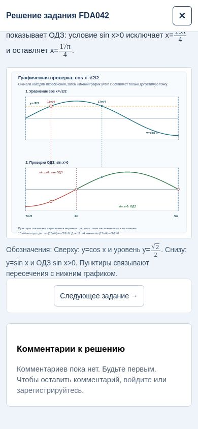
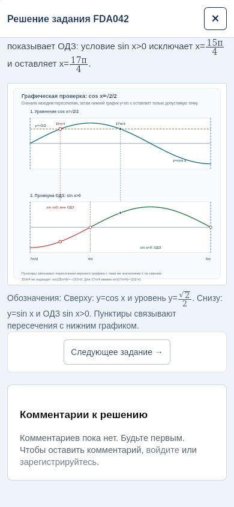
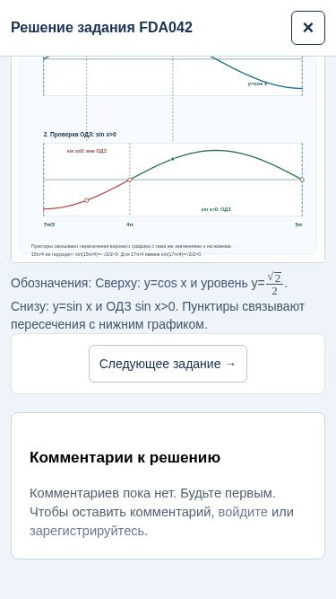
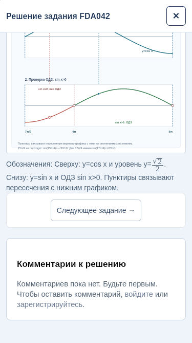

13 ноября 2026 по Москве. Продолжение анализа Метрики iPhone.
В доступных браузерах 28 сценариев прошли без ошибок сайта. Кнопка закрытия длинного решения доступна, переход к следующему заданию и возврат работают. Подтверждённую проблему для изменения кода воспроизвести не удалось. Настоящий iPhone и нативный «Яндекс Старт» остаются непроверенными.
На ширине 375 px проверен один next_task на один переход вперёд в обоих движках, с пустой и поздно появляющейся рекламной заглушкой. Три намеренных открытия диалога дают три solution_open с placement=dialog. Страница также поддерживает отдельное чтение встроенного решения с placement=task_page; это штатное достижение, поэтому нельзя считать все reaches числом открытых окон или решённых задач. Аналитика подменена локальной заглушкой: реальных целей от теста нет.
Нет подключённого настоящего iPhone, доступа к BrowserStack или другой ферме устройств. Поиск доступных интеграций BrowserStack результата не дал. Проверка не подтверждает работу нативного «Яндекс Старт», жестов пальцем, динамической панели приложения и настоящего рекламного SDK/креатива. Прокрутка решения программная, кнопки нажимались через tap. Изменение viewport проверяет геометрию при доступном месте, а не поведение реальной адресной строки. Различие профиля устройства и физического устройства соответствует подходу эмуляции Playwright.
Код, учебные материалы, SQLite, цели, реклама и настройки счётчика не изменялись. Перезапуска или публикации приложения нет. Без воспроизводимой ошибки оснований для правки или отката сейчас не найдено. Этот результат не объясняет ухудшение Метрики в «Яндекс Старт» и не доказывает отсутствие проблемы на настоящем устройстве.
24 основных сценария (12 на движок) и 4 сценария на 375 px с проверкой целей. Ошибок JavaScript в основных сценариях нет. Изменение document.scrollY при закрытии равно нулю во всех 28 случаях. Попыток записи в production нет; внешние запросы к аналитике и настоящей рекламе перехвачены. Персональные данные пользователей не собирались.
| Движок | Ширина | Маршрут | Условие | Результат |
|---|---|---|---|---|
| chromium | 390 | /tasks/FDA042 | Нет объявления | Пройдено |
| chromium | 390 | /tasks/6EFCFF | Нет объявления | Пройдено |
| chromium | 390 | /oge?topic=all | Нет объявления | Пройдено |
| chromium | 390 | /tasks/FDA042 | Рекламная заглушка 600 px | Пройдено |
| chromium | 390 | /tasks/6EFCFF | Рекламная заглушка 600 px | Пройдено |
| chromium | 390 | /oge?topic=all | Рекламная заглушка 600 px | Пройдено |
| chromium | 390 | /tasks/FDA042 | Появление заглушки после открытия решения | Пройдено |
| chromium | 390 | /tasks/6EFCFF | Появление заглушки после открытия решения | Пройдено |
| chromium | 390 | /oge?topic=all | Появление заглушки после открытия решения | Пройдено |
| chromium | 390 | /tasks/FDA042 | Ошибка загрузки рекламного SDK | Пройдено |
| chromium | 390 | /tasks/FDA042 | Задержка решения 1,5 с | Пройдено |
| chromium | 390 | /tasks/FDA042 | HTTP 503 и повторная попытка | Пройдено |
| webkit | 390 | /tasks/FDA042 | Нет объявления | Пройдено |
| webkit | 390 | /tasks/6EFCFF | Нет объявления | Пройдено |
| webkit | 390 | /oge?topic=all | Нет объявления | Пройдено |
| webkit | 390 | /tasks/FDA042 | Рекламная заглушка 600 px | Пройдено |
| webkit | 390 | /tasks/6EFCFF | Рекламная заглушка 600 px | Пройдено |
| webkit | 390 | /oge?topic=all | Рекламная заглушка 600 px | Пройдено |
| webkit | 390 | /tasks/FDA042 | Появление заглушки после открытия решения | Пройдено |
| webkit | 390 | /tasks/6EFCFF | Появление заглушки после открытия решения | Пройдено |
| webkit | 390 | /oge?topic=all | Появление заглушки после открытия решения | Пройдено |
| webkit | 390 | /tasks/FDA042 | Ошибка загрузки рекламного SDK | Пройдено |
| webkit | 390 | /tasks/FDA042 | Задержка решения 1,5 с | Пройдено |
| webkit | 390 | /tasks/FDA042 | HTTP 503 и повторная попытка | Пройдено |
| chromium | 375 | /tasks/FDA042 | Нет объявления | Пройдено |
| chromium | 375 | /tasks/FDA042 | Появление заглушки после открытия решения | Пройдено |
| webkit | 375 | /tasks/FDA042 | Нет объявления | Пройдено |
| webkit | 375 | /tasks/FDA042 | Появление заглушки после открытия решения | Пройдено |




Итоговые проверки и хеши кода · Chrome · WebKit · Узкий экран и цели